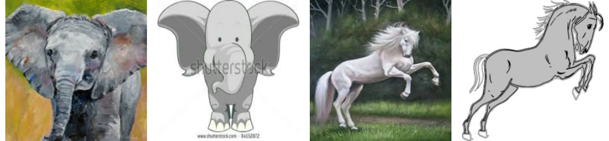
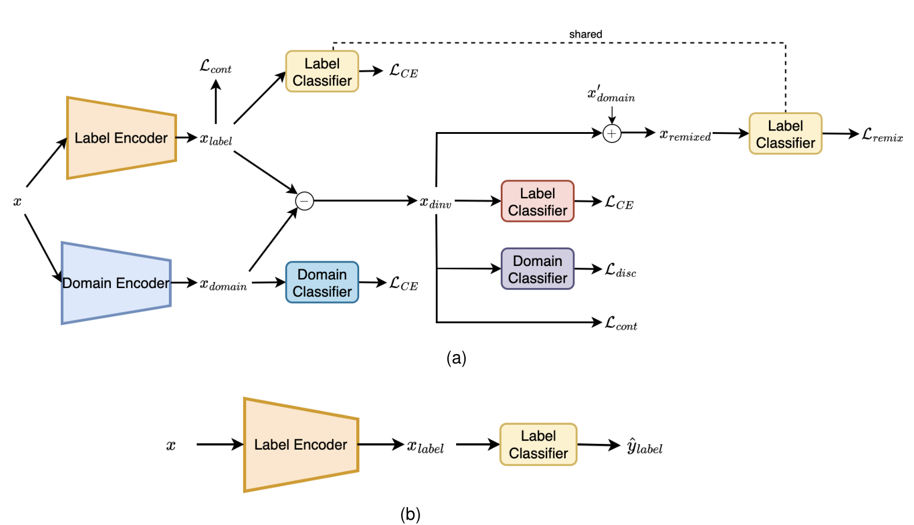
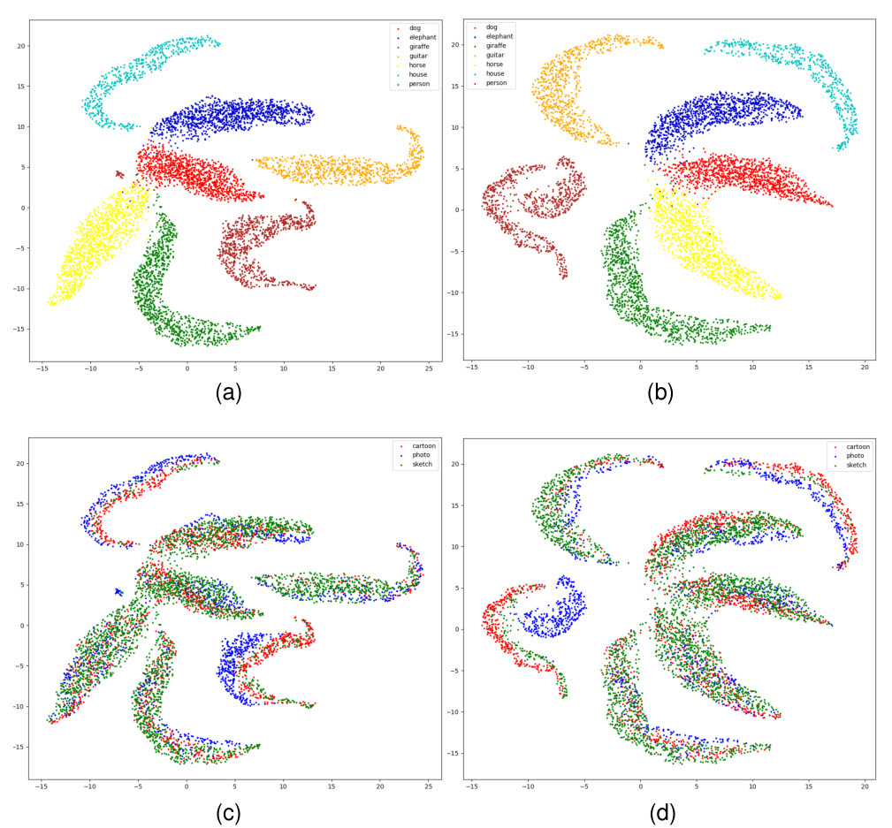

Domain generalization methods usually keep only the features that all training domains share. ADRMX keeps domain-specific ones as well. A label encoder and a domain encoder run in parallel, and their difference is trained, through class and domain supervision, to carry the label without the domain. Because the split is additive, we can add another domain's features back onto the invariant part, which gives new training samples in latent space. On DomainBed, ADRMX is competitive with the strongest domain generalization methods, with its clearest gain on the largest benchmark, DomainNet.
Some domain cues are worth keeping
A painted elephant and a cartoon elephant both look very different from a photograph, but they look a lot like each other: similar color patterns, similar compositions. Domain generalization trains on several labelled source domains and is tested on one it never sees, not even unlabelled. The usual answer is invariance: keep what all source domains share and suppress the rest, so that nothing specific to one domain can mislead the model on another. That assumes domain-specific information never helps with the label, and examples like these suggest otherwise.

Our hypothesis is that domain-specific, label-relevant features can serve as an additional guide on top of the invariant ones. The question is how to keep them without letting them take over.
An additive split
ADRMX runs two encoders on the same image. The label encoder is trained on class labels, so its features \(x_{\text{label}}\) are pushed to keep whatever predicts the class, domain cues included. The domain encoder is trained on domain labels, so \(x_{\text{domain}}\) is pushed toward what identifies the domain. We model the relationship between the two additively and take their difference as the domain-invariant part:
The subtraction alone does not make the split clean. What encourages it is the supervision on \(x_{\text{dinv}}\): it has to predict the class, cluster with same-class samples under a supervised contrastive loss, and fool a domain discriminator trained adversarially against it. Meanwhile the label encoder stays free to use domain cues that help classification, and at test time it is the only encoder used.

Remixing in latent space
If label features are roughly an invariant part plus a domain part, the parts can be swapped. Take two samples with the same label from different domains, and add the second one's domain features to the first one's invariant features:
The result stands in for "this object, rendered in that domain", and the label classifier that maps \(x_{\text{label}}\) to logits is also trained to classify it, with a cross-entropy remix loss. This is latent-space augmentation in the spirit of mixup, but it recombines content and domain instead of interpolating whole samples. Because the classifier is shared, it adds no parameters.
What we found
DomainBed compares algorithms under identical conditions: the same backbone and augmentation, a limited random hyperparameter search, and model selection on training-domain validation data only, averaged over three runs. It covers seven datasets, from ColoredMNIST to DomainNet.
| Method | PACS | DomainNet | Avg (7) |
|---|---|---|---|
| ADRMX | 85.3 | 43.1 | 67.6 |
| CORAL | 86.2 | 41.5 | 67.5 |
| SagNet | 86.3 | 40.3 | 67.2 |
| ERM | 85.5 | 40.9 | 66.6 |
| DANN | 83.6 | 38.3 | 66.1 |
On average ADRMX comes out on top, but only 0.1 points ahead of CORAL, so the two are effectively tied; it is ahead of ERM and of the other adversarial methods. It is the best method on just one of the seven datasets, DomainNet, the largest, and its lead there is what lifts its average. On PACS, the dataset that motivated the idea, SagNet and CORAL do better.
Each component contributes. Without the remix loss, accuracy on DomainNet drops, although ADRMX still stays ahead of CORAL there. On PACS, dropping the contrastive loss hurts, and so does relying on the domain-invariant features alone instead of the label features that keep the domain cues, which is direct support for the hypothesis.
Two caveats come with these results: adversarial training can be unstable, and limited compute restricted our hyperparameter search, most of all on DomainNet.
What the features look like
A UMAP of PACS features gives a qualitative picture. Colored by class, both the domain-specific and the domain-invariant features separate the objects. Colored by domain, the classes split into sub-clusters for different domains. This suggests that the model keeps the multi-modal structure of the data instead of forcing each class into a single domain-free cluster, which is the kind of extra guidance the hypothesis asked for.

Technical details
The contrastive loss is the in-batch supervised contrastive loss, applied to both \(x_{\text{label}}\) and \(x_{\text{dinv}}\):
where \(A(i)\) indexes all samples in the batch except \(i\), \(P(i)\) indexes its positives (same class), and each \(z\) is a normalized feature vector.
Training alternates between two objectives, as in a generator-discriminator setup. The generator step combines the classification, remix, and contrastive losses with the negated, \(\lambda\)-scaled domain-discrimination loss on \(x_{\text{dinv}}\); the discriminator step only learns to classify the domain of \(x_{\text{dinv}}\):
This follows the GAN-like variant of domain-adversarial training rather than a gradient-reversal layer. Both encoders are ImageNet-pretrained ResNet-50s with 2048-dimensional outputs, optimized with Adam.
Because adversarial training can be unstable, as SelfReg noted for other adversarial methods, we used a lower learning rate and a larger discriminator. On DomainNet we reused TerraIncognita's hyperparameters and trained longer, because the alternating updates halve the generator's iterations.
Citation
@article{demirel2023adrmx,
title={ADRMX: Additive Disentanglement of Domain Features with Remix Loss},
author={Demirel, Berker and Aptoula, Erchan and Ozkan, Huseyin},
journal={arXiv preprint arXiv:2308.06624},
year={2023}
}